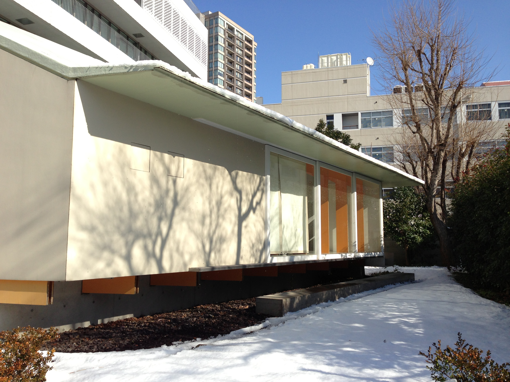

椎尾研究室
Siio Laboratory
お茶の水女子大学 理学部情報科学科 ／ 大学院人間文化創成科学研究科
椎尾研究室
Siio Laboratory
お茶の水女子大学 理学部情報科学科 ／ 大学院人間文化創成科学研究科
椎尾研究室は、お茶の水女子大学 理学部情報科学科および大学院人間文化創成科学研究科において、 2009年度から2021年度までの13年間にわたり活動した研究室です。 生活に密着したユビキタスコンピューティングと、人とコンピュータの新しいインタラクションの研究を通じて、 多数の学部生・大学院生を送り出しました。本サイトは、その活動記録を静的に保存したアーカイブです。
椎尾研究室では、生活に密着したユビキタスコンピューティングのアプリケーション提案と実装、 および人とコンピュータとの新しいインタラクションについて研究を行ってきました。 在職中は理学部情報科学科の学部生、大学院人間文化創成科学研究科理学専攻情報科学コースの 博士前期・後期課程の大学院生が所属し、実世界指向のインタラクション技術、ジェスチャ・タッチ入力、 センシング家具・家電、実験住宅（OchaHouse）を用いた生活支援技術など、幅広いテーマに取り組みました。
研究成果は CHI、UIST、ISS をはじめとする ACM 系国際会議や、WISS（インタラクティブシステムとソフトウェアに関する ワークショップ）などの国内会議で発表され、複数の学生が国内外で受賞しています。詳しくは Publications をご覧ください。
このサイトは以下の7つのセクションで構成されています。



【テンプレート注記】画像ファイルの用意方法は本メッセージの下部をご覧ください。
不要な写真はこの <figure class="photo-card"> ブロックごと削除してください。

椎尾 一郎（しいお いちろう／ Itiro Siio）
お茶の水女子大学 名誉教授
研究分野：ユビキタスコンピューティング、ヒューマンコンピュータインタラクション
【テンプレート注記】連絡先を掲載する場合は、迷惑メール対策としてメールアドレスを画像化する、 またはresearchmapの問い合わせフォーム経由に限定するなど、公開範囲にご注意ください。